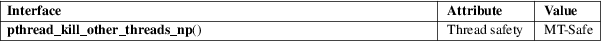

pthread_kill_other_threads_np − terminate all other threads in process
POSIX threads library (libpthread, −lpthread)
#include <pthread.h>
void pthread_kill_other_threads_np(void);
pthread_kill_other_threads_np() has an effect only in the LinuxThreads threading implementation. On that implementation, calling this function causes the immediate termination of all threads in the application, except the calling thread. The cancelation state and cancelation type of the to-be-terminated threads are ignored, and the cleanup handlers are not called in those threads.
For an explanation of the terms used in this section, see attributes(7).

In the NPTL threading implementation, pthread_kill_other_threads_np() exists, but does nothing. (Nothing needs to be done, because the implementation does the right thing during an execve(2).)
GNU; hence the suffix "_np" (nonportable) in the name.
glibc 2.0
pthread_kill_other_threads_np() is intended to be called just before a thread calls execve(2) or a similar function. This function is designed to address a limitation in the obsolete LinuxThreads implementation whereby the other threads of an application are not automatically terminated (as POSIX.1-2001 requires) during execve(2).
execve(2), pthread_cancel(3), pthread_setcancelstate(3), pthread_setcanceltype(3), pthreads(7)